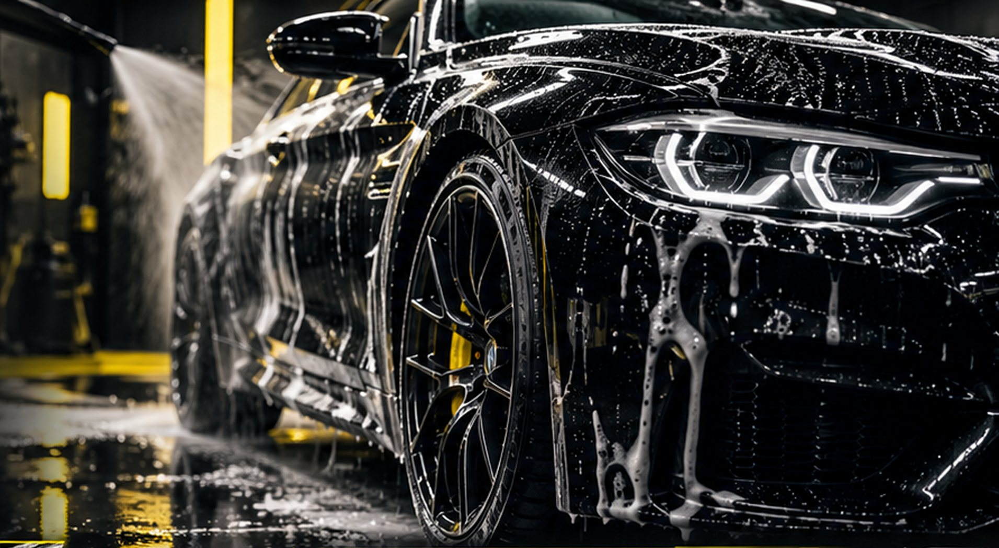
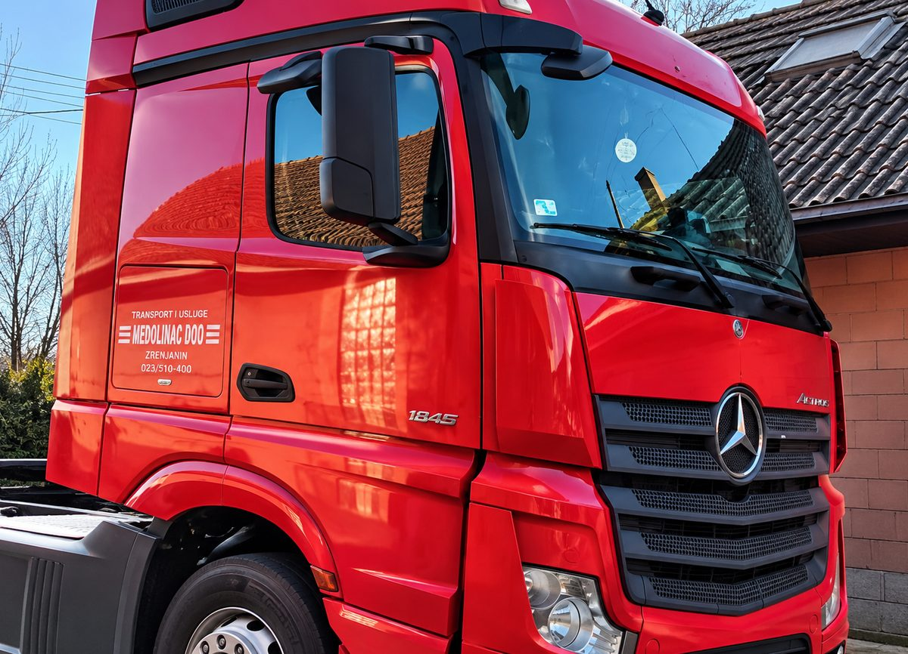
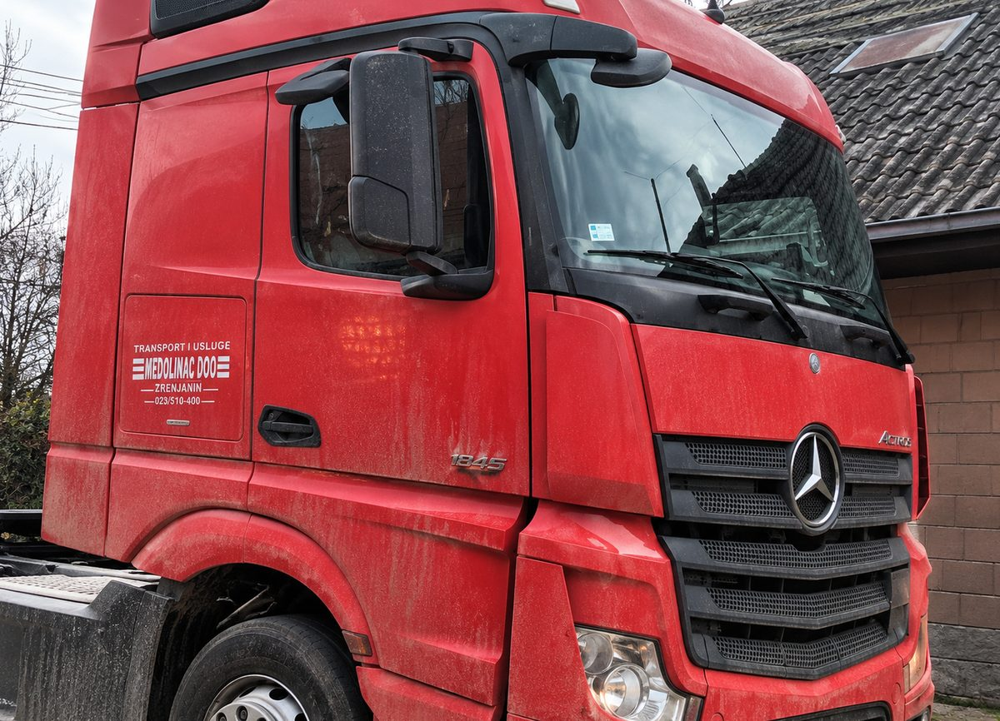

Zamena i montaža guma
Skidanje, montaža i zamena guma, uključujući sezonsku zamenu letnjih i zimskih guma.

Vulkanizer i auto-detailing
Zamena i balansiranje guma, prodaja novih i polovnih guma, programiranje TPMS senzora, pranje, dubinsko čišćenje i poliranje, sve u R-TIM-u u Bečeju.
Vulkanizerske usluge
Za sezonsku zamenu, novu gumu ili podešavanje senzora pritiska pozovite i proverite kada možete da dođete.
Skidanje, montaža i zamena guma, uključujući sezonsku zamenu letnjih i zimskih guma.
Balansiranje smanjuje vibracije u volanu i ujednačava habanje guma, pa je vožnja mirnija.
Prodaja novih i polovnih guma. Pitajte za dimenziju koja vam treba i trenutnu dostupnost.
Programiranje senzora pritiska u gumama kako bi ih sistem vašeg vozila ispravno prepoznao.
TPMS je sistem koji prati pritisak u gumama i upozorava vas lampicom na instrument tabli kada pritisak padne. Svaki točak ima mali senzor koji šalje podatke vozilu.
Kada se menjaju gume, točkovi ili sami senzori, vozilo često mora ponovo da „upozna“ senzore. Upravo to je programiranje. Ako vam lampica za pritisak svetli i posle zamene guma, javite nam se.
Pranje i auto-detailing
Od redovnog pranja do detaljnog sređivanja unutrašnjosti i vraćanja sjaja laku i farovima.
Spoljno pranje svih vrsta vozila za čist i uredan izgled.
Detaljno čišćenje unutrašnjosti: sedišta, tepisi, plastika i mesta koja svakodnevno čišćenje ne dohvati.
Poliranje laka osvežava izgled karoserije i vraća joj sjaj.
Poliranje zamućenih i požutelih farova za uredniji izgled i jasnije svetlo.
Pre i posle
Peremo sve vrste vozila, od automobila i kombija do kamiona i radnih mašina.
Prevucite liniju levo i desno, ili je pomerajte strelicama na tastaturi.


Pozovite i dogovorite termin za gume, pranje ili detailing. Online zakazivanje nije dostupno, sve dogovaramo direktno.